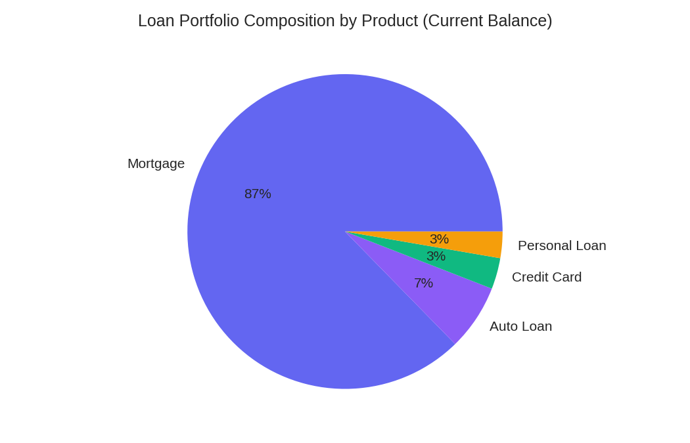
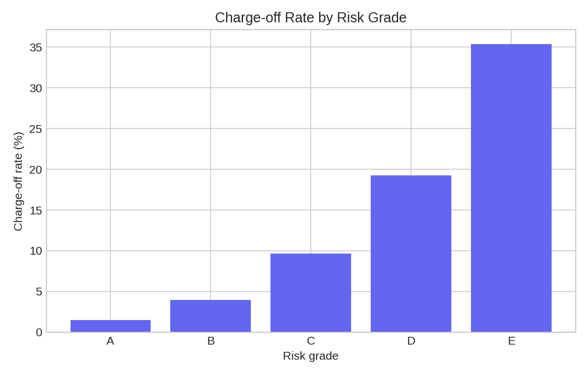
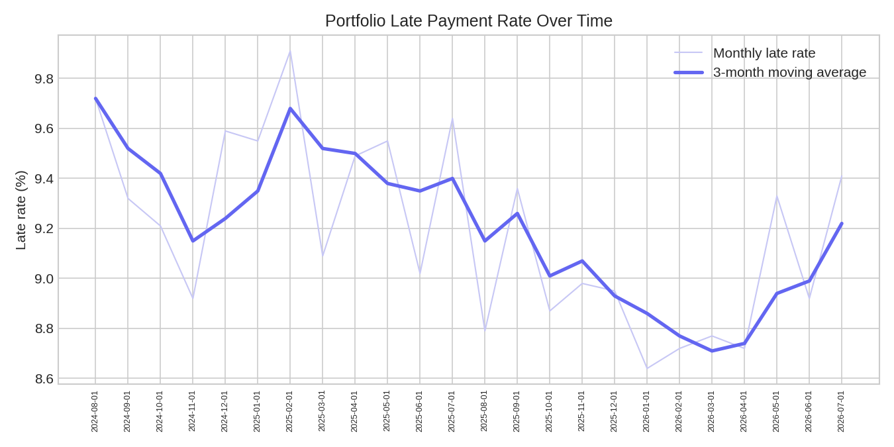
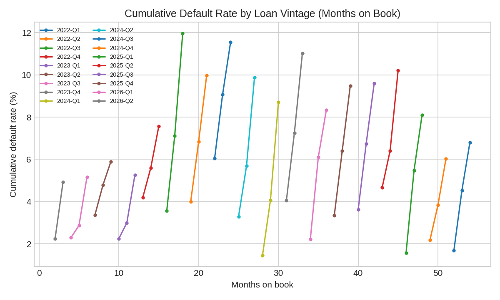

Overview
Executive summary
A single blended charge-off rate tells a risk team almost nothing about where exposure is actually concentrated, whether it is improving or just under-seasoned, or which customers represent the biggest untapped deposit relationship. This project answers all three directly in SQL — CTEs, window functions, vintage/cohort analysis, and NTILE-based prioritization — against a SQLite database covering 5,000 customers, 6,280 loans, and 24 months of payment history per active loan.
Methodology note
This dataset is synthetic, generated on purpose — not real customer or loan data from any institution, and no real bank is represented. Loan-level consumer lending data is not realistically obtainable as a public dataset at usable size without violating privacy or licensing terms, so the data was generated with deliberate, realistic credit risk logic instead: risk-grade-correlated default propensity, a proper vintage/seasoning curve (younger loans have had less time to default, exactly like a real portfolio), and segment-correlated deposit cross-sell patterns. Fixed random seed (42), fully reproducible via src/generate_bank_data.py. One limitation worth stating directly: the data captures each loan's status as of a single snapshot rather than an exact default date, so the vintage curve (below) attributes defaults to current months-on-book rather than the true default month — a reasonable approximation for trend-reading, not for provisioning-grade precision. Full detail in the repo README.
SQL Queries
Five business questions, five queries
Portfolio-wide headline numbers: total balance, charge-off rate, and active delinquency rate, plus composition by product.
SELECT
COUNT(*) AS total_loans,
ROUND(SUM(current_balance), 2) AS total_current_balance,
ROUND(100.0 * SUM(CASE WHEN status='Charged Off' THEN 1 ELSE 0 END)
/ COUNT(*), 2) AS charge_off_rate_pct,
ROUND(100.0 * SUM(CASE WHEN delinquency_bucket != 'Current'
AND status='Active' THEN 1 ELSE 0 END)
/ NULLIF(SUM(CASE WHEN status='Active' THEN 1 ELSE 0 END), 0), 2)
AS active_delinquency_rate_pct
FROM loans;
-- result: 6,280 loans, $305.8M balance, 8.38% charge-off, 11.25% active delinquency
Charge-off rate by risk grade, using a window function to cross-tab risk grade against credit band and check whether the internal grading system is actually predictive.
SELECT
risk_grade,
COUNT(*) AS loan_count,
ROUND(100.0 * SUM(CASE WHEN status='Charged Off' THEN 1 ELSE 0 END)
/ COUNT(*), 2) AS charge_off_rate_pct
FROM loans
GROUP BY risk_grade
ORDER BY risk_grade;
-- result: A 1.51% -> E 35.37%, a 23x spread -- the grading system is genuinely predictive
Monthly late-payment rate with month-over-month change (LAG()) and a 3-month moving average to separate real trend from single-month noise.
WITH monthly_stats AS (
SELECT payment_month,
ROUND(100.0 * SUM(CASE WHEN on_time_flag=0 THEN 1 ELSE 0 END)
/ COUNT(*), 2) AS late_rate_pct
FROM monthly_payments GROUP BY payment_month
)
SELECT payment_month, late_rate_pct,
ROUND(late_rate_pct - LAG(late_rate_pct) OVER (ORDER BY payment_month), 2)
AS mom_change_pct_pts,
ROUND(AVG(late_rate_pct) OVER (ORDER BY payment_month
ROWS BETWEEN 2 PRECEDING AND CURRENT ROW), 2) AS late_rate_3mo_avg
FROM monthly_stats ORDER BY payment_month;
Deposit-to-loan ratio by segment, plus an NTILE(4)-based outreach priority ranking of the highest-balance loan-only customers (no deposit relationship at all).
WITH customer_loans AS (
SELECT customer_id, SUM(current_balance) AS total_loan_balance
FROM loans WHERE status='Active' GROUP BY customer_id
),
customer_deposits AS (SELECT DISTINCT customer_id FROM deposits)
SELECT cl.customer_id, c.segment, cl.total_loan_balance,
NTILE(4) OVER (ORDER BY cl.total_loan_balance DESC) AS outreach_priority_tier
FROM customer_loans cl
JOIN customers c ON c.customer_id = cl.customer_id
LEFT JOIN customer_deposits cd ON cd.customer_id = cl.customer_id
WHERE cd.customer_id IS NULL
ORDER BY cl.total_loan_balance DESC;
Cumulative default curve by loan vintage (months on book, not calendar time) — the standard credit-risk technique for comparing cohorts fairly, computed with a running-total window function.
SELECT
d.origination_quarter, d.months_on_book, cs.cohort_size,
SUM(d.defaults_at_this_mob) OVER (
PARTITION BY d.origination_quarter ORDER BY d.months_on_book
ROWS BETWEEN UNBOUNDED PRECEDING AND CURRENT ROW
) AS cumulative_defaults,
ROUND(100.0 * SUM(d.defaults_at_this_mob) OVER (
PARTITION BY d.origination_quarter ORDER BY d.months_on_book
ROWS BETWEEN UNBOUNDED PRECEDING AND CURRENT ROW
) / cs.cohort_size, 2) AS cumulative_default_rate_pct
FROM defaults_by_mob d JOIN cohort_sizes cs USING (origination_quarter)
ORDER BY d.origination_quarter, d.months_on_book;
Full, runnable versions of every query (with comments) are in queries/ in the repo.
Portfolio
Portfolio composition by product

| Product | Loans | Balance | Avg. Rate | Charge-off Rate |
|---|---|---|---|---|
| Mortgage | 831 | $267.0M | 5.96% | 9.51% |
| Auto Loan | 1,697 | $20.7M | 7.98% | 8.49% |
| Credit Card | 1,897 | $9.8M | 21.13% | 9.59% |
| Personal Loan | 1,855 | $8.3M | 13.99% | 6.52% |
Mortgages dominate the balance sheet (87% of current balance from just 13% of loans, as expected for a secured, long-term product), but the more interesting read is Personal Loans: unsecured, yet the lowest charge-off rate of all four products at 6.52%, below both secured Auto Loans (8.49%) and Mortgages (9.51%).
Risk Segmentation
Charge-off rate by risk grade

Charge-off rate climbs from 1.51% at Grade A to 35.37% at Grade E — a 23x spread from best to worst grade. That is a strong, monotonic relationship, meaning the risk grade is doing real predictive work, not just sorting loans into arbitrary buckets. Credit band alone shows the same directional pattern but a much narrower spread (Poor 19.81% vs. Excellent 3.61%, roughly 5.5x), which means risk grade is the sharper lever for pricing and provisioning decisions, not credit band on its own.
Delinquency Trend
Late payment rate over time

The 3-month moving average is what a risk committee should actually watch — the raw monthly rate is noisy enough on its own to send a false signal in either direction from a single bad or good month.
Cross-Sell
Deposit-to-loan ratio by segment
| Segment | Loan Customers | No-Deposit Customers | % No Deposit | Deposit-to-Loan Ratio |
|---|---|---|---|---|
| Mass Market | 2,480 | 946 | 38.15% | 0.22 |
| Affluent | 824 | 132 | 16.02% | 0.65 |
| Private Banking | 201 | 30 | 14.93% | 1.91 |
Mass Market carries both the lowest deposit-to-loan ratio (0.22, versus 1.91 for Private Banking) and, in absolute headcount, by far the largest cross-sell opportunity: 946 customers with an active loan and zero deposit relationship. Percentage-wise it doesn't look dramatic (38.15%), but the volume is where the actual dollar opportunity lives — this is the segment a deposit cross-sell campaign should target first.
Vintage Curves
Cumulative default rate by loan vintage

Read this chart by months-on-book on the x-axis, not by which line is highest today. The 2025-2026 cohorts show lower default rates, but they've only been on book 2.5 to 14 months on average — nowhere near enough time to season, since most defaults in this portfolio happen well past the 18-month mark. A cohort's default rate can only be trusted once it has aged past roughly 24 months; anything younger is unproven, not necessarily safer.
Key Findings
Findings & recommendation
1. The risk grading system is genuinely predictive, not just a label
Charge-off rate rises 23x from Grade A (1.51%) to Grade E (35.37%), a much sharper and more monotonic signal than credit band alone (5.5x spread). Pricing and provisioning decisions should weight risk grade more heavily than credit band.
2. The biggest cross-sell opportunity is concentrated in Mass Market, by volume
946 Mass Market customers hold an active loan with zero deposit relationship — more than 7x the combined loan-only count of Affluent and Private Banking. The segment's deposit-to-loan ratio (0.22) is less than a third of Affluent's (0.65).
3. Recent cohorts look safer only because they haven't been tested yet
Average months-on-book falls from 53 months (2022-Q1 cohort) to 2.5 months (2026-Q2 cohort) in step with declining default rates — a seasoning artifact, not proof that recent underwriting is better. Cohorts need to season past ~24 months before their default rate can be trusted.
4. Personal Loans quietly outperform secured products on credit quality
Despite being unsecured, Personal Loans carry the lowest charge-off rate of all four products (6.52%), below both Auto Loans (8.49%) and Mortgages (9.51%) — worth understanding whether this is underwriting discipline or portfolio mix before assuming secured lending is automatically the safer book.
Recommendation
Launch a deposit cross-sell campaign targeted first at the 946 Mass Market loan-only customers, using the NTILE-based outreach priority tiers already computed in the cross-sell query to sequence contact by loan balance. On the risk side, treat 2025-2026 vintage performance as unproven rather than as evidence of improving underwriting until those cohorts pass the 24-month seasoning mark, and lean on risk grade over credit band alone when setting pricing and loss provisions, since it is the sharper predictive signal of the two.